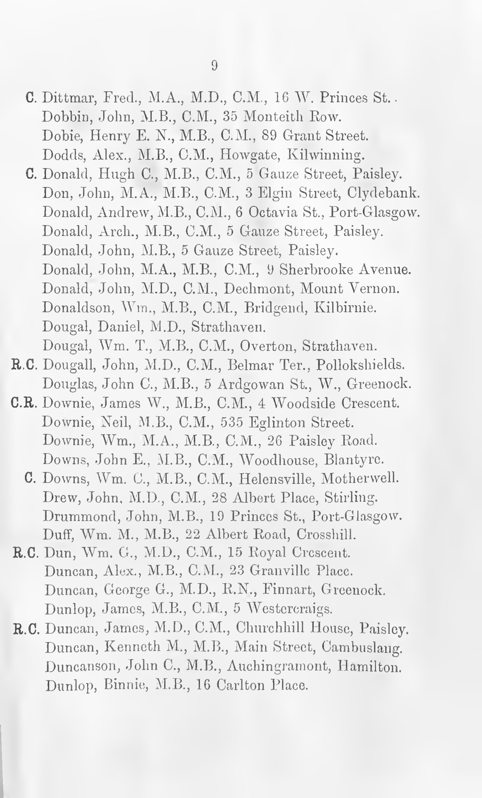
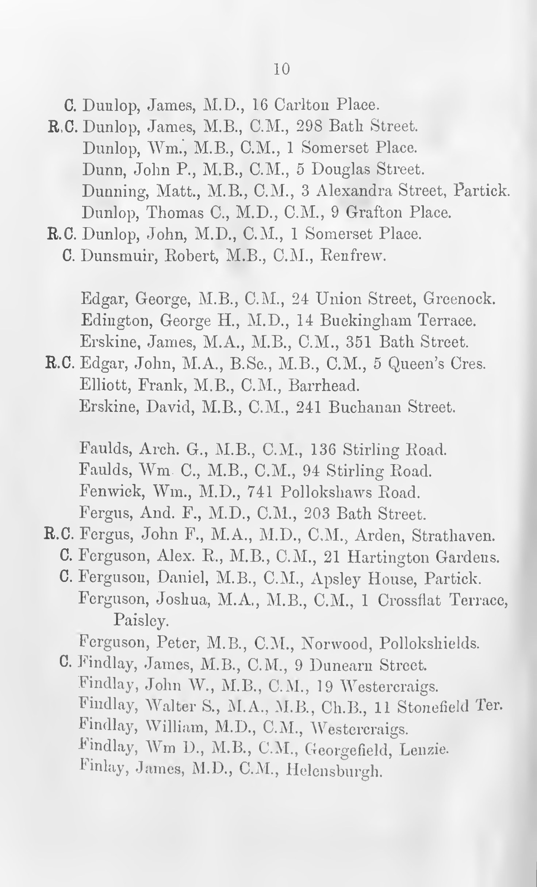

The Names He Carried · The Research
Doug Garceau, comp., “Directory of physicians and surgeons, pages 9–10,” DOC-010, The Names He Carried: The Research (https://douggarceau.com/the-names-he-carried/archive/items/doc-010.html : accessed [date]); original: Printed directory of physicians and surgeons, Glasgow and district, pages 9–10. Catalogued as 1899 by the Trades House of Glasgow Library (physicians_and_surgeons ~ 1899).


This copy carries yellow highlighting or red outlining added for the book site. It is not on the original.
The second image is an enlarged section of the same document.
Tap an image to open it full size.
Everything as written, including misspellings. [?] marks an uncertain reading. Struck-through words are marked as struck through. Notes in square brackets describe the page and are not part of it.
[Printed directory of physicians and surgeons, Glasgow and district. Catalogued by the holding library as 1899. Two pages.] [Page 9] 9 C. Dittmar, Fred., M.A., M.D., C.M., 16 W. Princes St. . Dobbin, John, M.B., C.M., 35 Monteith Row. Dobie, Henry E. N., M.B., C.M., 89 Grant Street. Dodds, Alex., M.B., C.M., Howgate, Kilwinning. C. Donald, Hugh C., M.B., C.M., 5 Gauze Street, Paisley. Don, John, M.A., M.B., C.M., 3 Elgin Street, Clydebank. Donald, Andrew, M.B., C.M., 6 Octavia St., Port-Glasgow. Donald, Arch., M.B., C.M., 5 Gauze Street, Paisley. Donald, John, M.B., 5 Gauze Street, Paisley. Donald, John, M.A., M.B., C.M., 9 Sherbrooke Avenue. Donald, John, M.D., C.M., Dechmont, Mount Vernon. Donaldson, Wm., M.B., C.M., Bridgend, Kilbirnie. Dougal, Daniel, M.D., Strathaven. Dougal, Wm. T., M.B., C.M., Overton, Strathaven. R.C. Dougall, John, M.D., C.M., Belmar Ter., Pollokshields. Douglas, John C., M.B., 5 Ardgowan St., W., Greenock. C.R. Downie, James W., M.B., C.M., 4 Woodside Crescent. Downie, Neil, M.B., C.M., 535 Eglinton Street. Downie, Wm., M.A., M.B., C.M., 26 Paisley Road. Downs, John E., M.B., C.M., Woodhouse, Blantyre. C. Downs, Wm. C., M.B., C.M., Helensville, Motherwell. Drew, John, M.D., C.M., 28 Albert Place, Stirling. Drummond, John, M.B., 19 Princes St., Port-Glasgow. Duff, Wm. M., M.B., 22 Albert Road, Crosshill. R.C. Dun, Wm. G., M.D., C.M., 15 Royal Crescent. Duncan, Alex., M.B., C.M., 23 Granville Place. Duncan, George G., M.D., R.N., Finnart, Greenock. Dunlop, James, M.B., C.M., 5 Westercraigs. R.C. Duncan, James, M.D., C.M., Churchhill House, Paisley. Duncan, Kenneth M., M.B., Main Street, Cambuslang. Duncanson, John C., M.B., Auchingramont, Hamilton. Dunlop, Binnie, M.B., 16 Carlton Place. [Page 10] 10 C. Dunlop, James, M.D., 16 Carlton Place. R.C. Dunlop, James, M.B., C.M., 298 Bath Street. Dunlop, Wm., M.B., C.M., 1 Somerset Place. [a stray mark after "Wm."] Dunn, John P., M.B., C.M., 5 Douglas Street. Dunning, Matt., M.B., C.M., 3 Alexandra Street, Partick. Dunlop, Thomas C., M.D., C.M., 9 Grafton Place. R.C. Dunlop, John, M.D., C.M., 1 Somerset Place. C. Dunsmuir, Robert, M.B., C.M., Renfrew. Edgar, George, M.B., C.M., 24 Union Street, Greenock. Edington, George H., M.D., 14 Buckingham Terrace. Erskine, James, M.A., M.B., C.M., 351 Bath Street. R.C. Edgar, John, M.A., B.Sc., M.B., C.M., 5 Queen's Cres. Elliott, Frank, M.B., C.M., Barrhead. Erskine, David, M.B., C.M., 241 Buchanan Street. Faulds, Arch. G., M.B., C.M., 136 Stirling Road. Faulds, Wm. C., M.B., C.M., 94 Stirling Road. Fenwick, Wm., M.D., 741 Pollokshaws Road. Fergus, And. F., M.D., C.M., 203 Bath Street. R.C. Fergus, John F., M.A., M.D., C.M., Arden, Strathaven. C. Ferguson, Alex. R., M.B., C.M., 21 Hartington Gardens. C. Ferguson, Daniel, M.B., C.M., Apsley House, Partick. Ferguson, Joshua, M.A., M.B., C.M., 1 Crossflat Terrace, Paisley. Ferguson, Peter, M.B., C.M., Norwood, Pollokshields. C. Findlay, James, M.B., C.M., 9 Dunearn Street. Findlay, John W., M.B., C.M., 19 Westercraigs. Findlay, Walter S., M.A., M.B., Ch.B., 11 Stonefield Ter. Findlay, William, M.D., C.M., Westercraigs. Findlay, Wm D., M.B., C.M., Georgefield, Lenzie. Finlay, James, M.D., C.M., Helensburgh. [The meaning of the marks "C." and "R.C." is not explained on these two pages.]